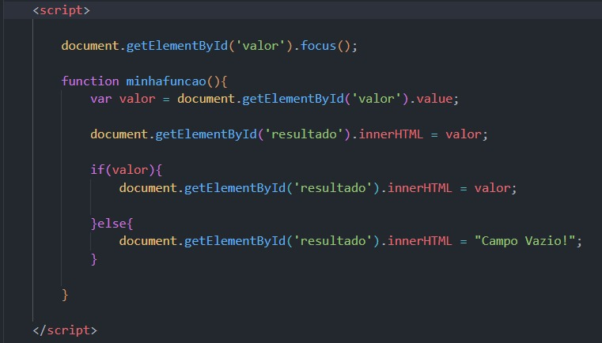

O evento onfocus é uma função do JavaScript que é acionada quando um elemento HTML recebe o foco, ou seja, quando o usuário clica nele ou navega para ele usando a tecla Tab. Você pode usar o evento onfocus para executar uma ação quando o usuário entra em um determinado elemento HTML, como um campo de entrada de texto. Por exemplo, você pode exibir uma mensagem de ajuda ou selecionar automaticamente todo o texto no campo de entrada quando ele receber o foco.
Se voce não preencher nada o codigo vai fazer o reconhecimento com o evento onblur